Et af de … temaer i NewDeal Invest
Datacentre
Et datacenter er en stor hal med tusindvis af computere, der regner for os døgnet rundt.
Her bliver AI-modeller trænet, og her beregner de svar. Her kører også mange af de programmer og tjenester, vi bruger over nettet — det, vi kalder skyen. Temaets selskaber leverer lysbaserede dataforbindelser og kabler, netværket, serverne og bygningen, eller de driver selve hallen. I fonden består temaet af … selskaber.
Her udforsker du fondens selskaber i temaet. Udvalget dækker ikke hele teknologiområdet.
AI-genererede forklaringer og forenklede illustrationer · Om indhold og kilder
Her udforsker du fondens investeringer, ikke en fuldstændig gennemgang af teknologiområder eller selskaber. Selskabsbeskrivelserne bygger på selskabernes egne oplysninger og øvrige angivne kilder. De er ikke manuelt faktatjekket af NewDeal Invest og kan indeholde fejl eller være forældede.
Illustrationerne forenkler sammenhængene. En forbindelse viser ikke i sig selv et dokumenteret kunde- eller leverandørforhold. Fondstal vises særskilt med kilde og dato. NewDeal Invests egne kommentarer og citater er angivet med afsender og kilde.
Forandringen
AI har gjort datacentret til en fabrik for regnekraft
Hver gang du spørger en AI om noget, bliver svaret regnet ud i et datacenter: en stor hal med tusindvis af servere, der arbejder døgnet rundt.
AI har ændret, hvad sådan en hal skal kunne. Serverne er blevet langt kraftigere og bruger meget mere strøm, de tætteste skal køles med væske i stedet for luft, og de skal forbindes med lys gennem fiber, så de kan arbejde som én stor computer.
De største techselskaber investerer derfor rekordbeløb i nye datacentre. Pengene går til servere, kabler, lasere, netværk og bygninger, og det er her, temaets selskaber kommer ind.
- Amazon131,8 mia. dollar2025
- Alphabet91,4 mia. dollar2025
- Meta72,2 mia. dollar2025
Selskabernes egne tal for køb af bygninger og udstyr, også uden for datacentre. Tallene dækker hele selskabernes investeringer og kan derfor ikke læses som investeringer i datacentre alene.
Regn selv
Byg dit eget datacenter
Vælg en type serverskab, også kaldet et rack, og tilføj flere. Regnestykket viser, hvor meget strøm hallen bruger, og listen viser, hvilke af temaets leverandører du får brug for.
0,12MW, når serverne kører fuldt
1,1GWh på et år ved fuld drift
234danske familiers elforbrug
- Servere og racksServerne og de skabe, de sidder i.8 selskaber
- Kabler, fiber og stikNår der er mere end ét rack, skal de forbindes.4 selskaber
- Lasere og optiske modulerMange racks forbindes med lys gennem fiber.12 selskaber
- Netværk og forbindelseschipsNetværket styrer trafikken mellem alle serverne.8 selskaber
- Byggeri og kølingEn hal med strøm og køling. De tætteste AI-racks skal køles med væske.4 selskaber
- Drift og cloudNogen skal drive hallen og leje regnekraften ud.11 selskaber
Regnestykket: antal racks gange strøm pr. rack gange 8.760 timer i et år, hvis hallen kører fuldt hele året. En familie bruger 4.500 kWh om året ifølge Energistyrelsen. Køling og andet udstyr bruger mere strøm, og det er ikke regnet med.
Forretningsmodellerne
Seks måder datacenterselskaberne tjener penge på
Temaets selskaber leverer hver sin del af et datacenter: dataforbindelserne, netværket, serverne, bygningen og driften. Bjælken viser, hvor meget hver gruppe fylder i fonden.
Lasere og optiske moduler
…af fonden
Når tusindvis af servere skal arbejde sammen, sendes data som lys gennem tynde glastråde, fiber. Lasere og optiske moduler laver det elektriske signal om til lys og tilbage igen. Selskaberne tjener på at sælge komponenterne til dem, der bygger servere og netværk. Nogle udvikler stadig deres teknologi og har kun en lille omsætning.
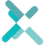
Sivers SemiconductorsLaver kraftige lasere til lysforbindelser, bl.a. i AI-datacentre. Laver også chips til trådløs kommunikation.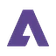
Applied OptoelectronicsLaver udstyr til fibernet, bl.a. til datacentre, kabel-tv, tele og internet til hjemmet.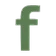
FabrinetProducerer optiske og elektroniske komponenter for andre. Produkter til datacentre var 47,9 % af omsætningen i regnskabsåret 2026.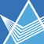
POET TechnologiesUdvikler en teknik, der samler lyskomponenter på én chip. Den første anvendelse er optiske moduler til datacentre.- MACOMDesigner og producerer chips til industri og forsvar, datacentre og tele.
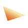
Lightwave LogicUdvikler særlige plastmaterialer, der kan styre lys i optiske komponenter.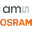
ams OSRAMLaver lys- og sensorløsninger. Optik til datacentre er på prototypestadiet.- nLightLaver kraftige lasere, især til forsvar og luftfart.
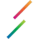
LumentumLaver optiske produkter. Den største del af omsætningen kommer fra komponenter, der bl.a. leveres til cloud-datacentre og AI-selskaber.- IPG PhotonicsLaver fiberlasere, især til bearbejdning af materialer.
- SemtechChips til bl.a. netværk i datacentre, til industri og til mobilnet.
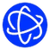
CoherentLaver lasere, optiske moduler og materialer til datacentre, kommunikation og industri.
Kabler, fiber og stik
…af fonden
Kobberkabler forbinder det, der står tæt på hinanden, og fiberkabler bærer lyset over længere afstand. Stikkene holder forbindelsen præcis og tæt. Selskaberne sælger også til andre kunder end datacentre, fx tele og industri.
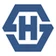
Huber+SuhnerLeverer forbindelser med fiber og radiosignaler, bl.a. til datacentre.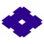
Sumitomo Electric IndustriesLaver bl.a. optiske stik og komponenter til datacentre. Selskabet laver også dele til biler.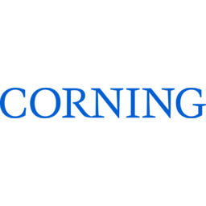
CorningGlas og materialer. Optisk kommunikation var det største forretningsområde i 2025 med en omsætning på 6.274 mio. USD.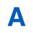
AmphenolStik, kabler, fiberforbindelser, antenner og sensorer.
Netværk og forbindelseschips
…af fonden
Netværket bestemmer, hvor data skal hen, i hallen og mellem datacentre. Forbindelseschips får mange chips til at arbejde som én stor computer, og andre selskaber laver udstyr, der tester forbindelserne. Selskaberne tjener på at sælge udstyr og chips og ofte på software og service til udstyret.
- CienaNetværksudstyr, software og service til netværk. Én cloududbyder stod for omkring 18 % af omsætningen i regnskabsåret 2025.
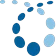
CredoLaver kabler, optiske moduler og chips til meget hurtige forbindelser.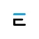
LumenFibernet og netværkstjenester til virksomheder.- Viavi SolutionsTest- og måleudstyr til netværk samt optiske produkter. Datacentre er ét af flere markeder.
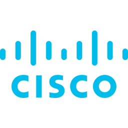
Cisco SystemsNetværksudstyr, bl.a. til AI hos store cloududbydere.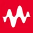
Keysight TechnologiesTest- og måleudstyr, bl.a. til forbindelserne i og mellem datacentre.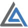
Astera LabsForbindelseschips, der får mange chips i samme system til at arbejde sammen.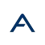
Arista NetworksNetværksudstyr og software til datacentre, også til AI.
Servere og racks
…af fonden
En server er en computer uden skærm, der arbejder døgnet rundt. Serverne sidder stablet i høje skabe, der kaldes racks. Flere af selskaberne er kontraktproducenter, altså fabrikker, der producerer for andre. De tjener på store ordrer, ofte med en lille fortjeneste på hver leveret enhed.
- TSSSamler bl.a. serverskabe, der er klar til AI.
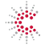
CelesticaDesigner og producerer for andre, bl.a. udstyr til AI- og clouddatacentre.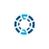
One Stop SystemsLaver robuste, kraftige computere til brug ude i felten.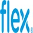
FlexProducerer for andre. Området med regnekraft, strøm og køling til datacentre var 24 % af omsætningen i regnskabsåret til 31.3.2026.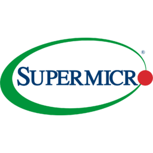
Super Micro ComputerServere og hele serverskabe, bl.a. til AI.- JabilProducerer for andre. Forretningsområdet Intelligent Infrastructure, som omfatter AI-infrastruktur og kunder inden for kapitaludstyr, cloud og datacentre samt netværk og kommunikation, var 48 % af omsætningen i 3. kvartal af regnskabsåret 2026 (marts til maj 2026).
- DellPC'er, servere, lager og netværk. Leverede AI-servere for 24.683 mio. USD i regnskabsåret 2026.
- SanminaProducerer for andre. Området for cloud og AI-infrastruktur var 62 % af omsætningen i kvartalet til 27.6.2026.
Drift og cloud
…af fonden
Cloud betyder, at man lejer regnekraft og lager over nettet i stedet for at eje sine egne servere. Oracle og Microsoft er store udbydere. Flere af de øvrige har tidligere brugt deres computere til bitcoin-mining, hvor beregninger sikrer bitcoin-netværket og belønnes med bitcoin. Selskaberne tjener på at leje regnekraft og plads ud, ofte på lange kontrakter med få store kunder.
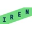
IRENEjer og driver datacentre og lejer regnekraft ud til AI. Driver stadig bitcoin-mining i dele af sine datacentre, mens de lægges om.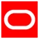
OracleForretningssoftware og cloud. Oracles cloud leverer regnekraft, lager og netværk.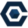
Core ScientificBygger og driver datacentre og lejer plads ud til store AI-beregninger. Har også bitcoin-mining.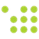
Cipher DigitalEr ved at lægge om fra bitcoin-mining til datacentre med lejeaftaler.- WhiteFiberEjer datacentre og lejer regnekraft til AI ud som cloudtjeneste.
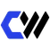
CoreWeaveCloud bygget til AI: træning og brug af AI-modeller på egen software og egne servere.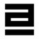
SharonAIAustralsk udbyder af regnekraft til AI via cloud.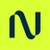
NebiusCloud til AI med regnekraft, software og tjenester til at træne og bruge AI-modeller.- MicrosoftSoftware, cloud og AI. Microsofts cloud, Azure, leverer regnekraft, netværk og lager fra selskabets datacentre.
- TeraWulfDriver datacentre til AI og andre store beregninger. Udlejning af regnekraft var 31,9 af 44,8 mio. USD i omsætning i 2. kvartal 2026.
- Applied DigitalDesigner, bygger og driver datacentre til AI og andre store beregninger. CoreWeave lejer kapacitet.
Byggeri og køling
…af fonden
Før den første server tændes, skal der være en bygning, strøm og køling. Serverne laver meget varme, og kølingen leder den væk. Selskaberne er ingeniørfirmaer og entreprenører, der tjener på at tegne, bygge og installere.
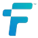
Fermi ingen omsætningUdvikler et område til energi og datacentre i Texas.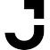
Jacobs SolutionsIngeniør- og rådgivningsfirma inden for infrastruktur.- Sterling InfrastructureAnlægsarbejde. Byggemodning og el-arbejde, bl.a. til datacentre, var 59 % af omsætningen i 2025.
- Comfort Systems USAInstallerer køling, ventilation, VVS og el i bygninger, bl.a. datacentre.
Flere af fondens selskaber arbejder også med området. Du finder dem desuden i disse temaer: 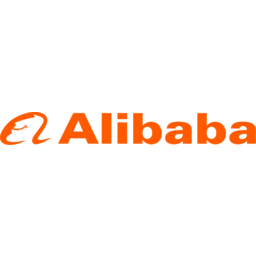 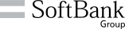 Amazon,
Amazon,  Meta og
Meta og
Linjen om hvert selskab bygger på selskabets egne årsrapporter og hjemmeside. Markeringen "ingen omsætning" bygger på Fermis kvartalsrapport pr. 30.6.2026. Grupperne er NewDeal Invests egen opdeling. Hvor meget af selskabernes omsætning der kommer fra datacentre og AI, kan ofte ikke opgøres, fordi selskaberne ikke oplyser det for sig. Andele i PMINDI pr. … (fondens data).
Forskellen
Hvad adskiller et AI-datacenter fra et almindeligt datacenter?
Knap 8 kW i gennemsnit.
Strøm pr. rack
Omkring 120 kW med NVIDIAs AI-servere GB200 NVL72.
Køles med luft.
Køling
Racks som GB200 NVL72 skal køles med væske, fordi de laver meget mere varme. Andre AI-servere kan stadig køles med luft.
Serverne arbejder mest hver for sig.
Forbindelserne
Mange servere forbindes med lys gennem fiber, så de kan arbejde som én stor computer.
Det har vi skrevet
NewDeal Invests perspektiv
Ordret uddrag af NewDeal Invests egne ugebreve og indlæg om temaet, med dato og link til hele teksten. Det er ikke en anbefaling.
"Oracle fortæller samtidig, at deres nye datacenterfaciliteter er profitable fra det øjeblik, de bliver taget i brug. Oracle regnskabet fortæller i virkeligheden den samme historie som Anthropics tal: der er kæmpestor efterspørgsel efter AI-compute."
Nævner: Oracle, Anthropic
Læs hele teksten på bloggen (åbner i nyt vindue)Risici
Risici ved datacentre
Få store kunder
Hos flere af selskaberne kommer meget af omsætningen fra få kunder, og mister de én, kan det mærkes med det samme. Core Scientific lejer kun datacenterplads ud til CoreWeave.
Investeringer før indtægter
Et datacenter skal bygges og udstyres, før det kan lejes ud, og pengene kan være brugt, før indtægterne kommer. Fermi havde ingen omsætning pr. 30.6.2026.
Teknologi under udvikling
Nogle af selskaberne udvikler stadig deres teknologi og har kun en meget lille omsætning, fx Lightwave Logic. Teknologien kan vise sig ikke at slå igennem.
Omstilling fra bitcoin
Flere af de selskaber, der lejer regnekraft ud, driver stadig bitcoin-mining, og omstillingen kan tage længere tid end ventet. Hos Cipher Digital kom al omsætning i 2025 og første halvår 2026 fra mining.
Datacentre er ikke hele forretningen
Hos nogle af selskaberne er datacentre kun en del af salget, så resten af forretningen kan trække i en anden retning, fx hos nLight.
Kilder: årsrapporterne for 2025 fra Core Scientific (åbner i nyt vindue), CoreWeave (åbner i nyt vindue), Lightwave Logic (åbner i nyt vindue), Cipher Digital (åbner i nyt vindue) og nLight (åbner i nyt vindue), Ciphers kvartalsrapport (åbner i nyt vindue) og Fermis kvartalsrapport (åbner i nyt vindue). Listen er et udvalg og ikke en fuldstændig oversigt.
Kilder og kreditering
Tal og tekst
- Temaer og grupper: NewDeal Invests egen opdeling. Hvad selskaberne laver, bygger på deres egne årsrapporter.
- Køb af bygninger og udstyr i 2025: årsrapporterne fra Amazon (131,8 mia. dollar) (åbner i nyt vindue), Alphabet (91,4 mia. dollar) (åbner i nyt vindue) og Meta (72,2 mia. dollar) (åbner i nyt vindue). At omkring 60 % af Alphabets investeringer gik til servere: Alphabets finansdirektør ved regnskabet for 4. kvartal 2025, gengivet af Platformonomics (åbner i nyt vindue).
- Strøm pr. rack: NVIDIA, DGX GB200 User Guide (åbner i nyt vindue) (omkring 120 kW) og Uptime Institutes undersøgelse 2025 (gennemsnit 7,6 kW), gengivet af Vertiv (åbner i nyt vindue).
- Omsætningsandele i selskabskortene: Ciena, 10-K for regnskabsåret 2025 (åbner i nyt vindue), Flex, 10-K for regnskabsåret til 31.3.2026 (åbner i nyt vindue), Sterling Infrastructure, 10-K 2025 (åbner i nyt vindue) og Sanmina, regnskabsmeddelelse for kvartalet til 27.6.2026 (åbner i nyt vindue).
- Elforbrug for en familie (4.500 kWh om året): Energistyrelsen, gengivet af Bolius (åbner i nyt vindue). Regnestykket i "Byg dit eget datacenter" er NewDeal Invests eget.
- Risici: Core Scientific (åbner i nyt vindue), CoreWeave (åbner i nyt vindue), Lightwave Logic (åbner i nyt vindue), Cipher Digital (åbner i nyt vindue), Fermi (åbner i nyt vindue) og nLight (åbner i nyt vindue).
- Citatet: NewDeal Invest, "Betaler investeringer i AI sig?", 16.3.2026 (åbner i nyt vindue).
Tegninger og logoer
- Tegningen af hallen, figurerne og ikonerne er forenklede tegninger lavet af NewDeal Invest med hjælp fra AI.
- Logoer tilhører de enkelte selskaber.